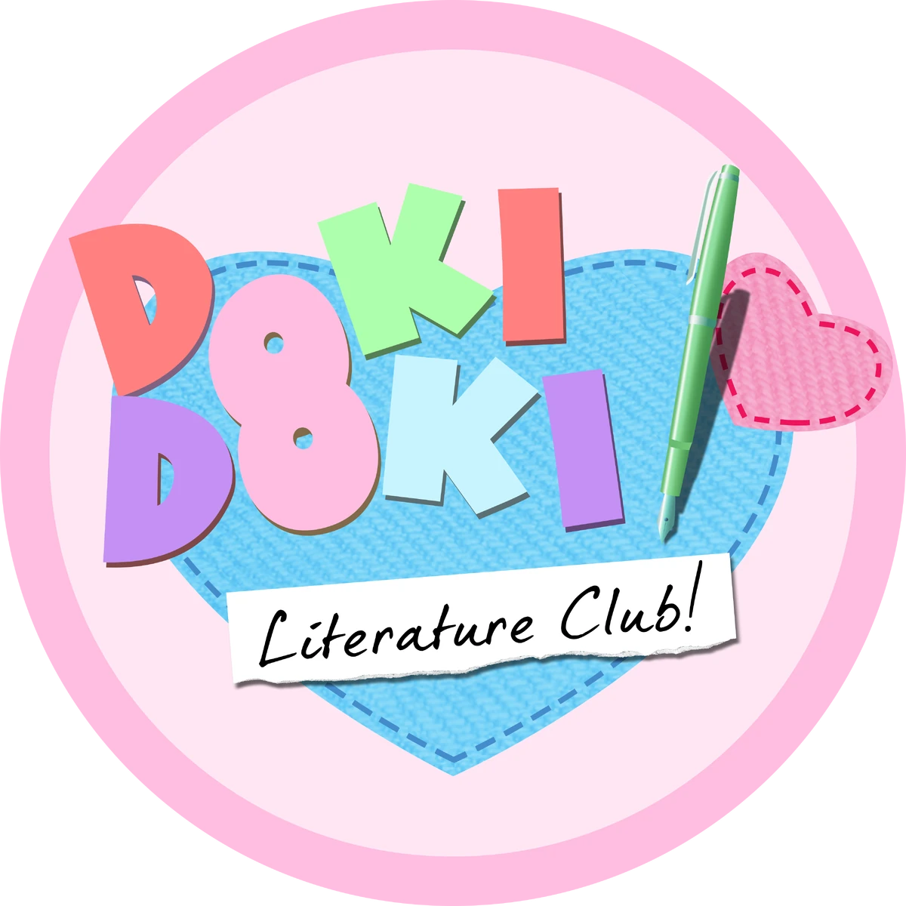
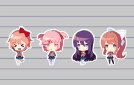
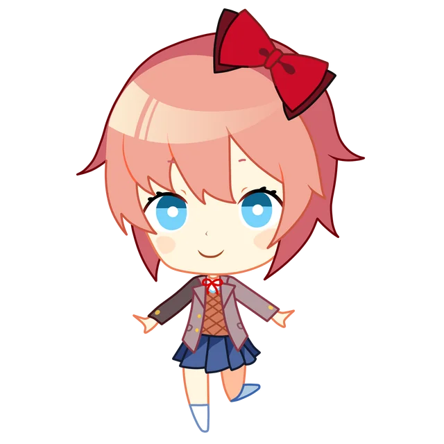

RESUMO DE DOKI DOKI LITERATURE CLUB


Doki Doki Literature Club (DDLC) é um jogo de visual novel desenvolvido pela Team Salvato, lançado em 2017.
Inicialmente, o jogo parece ser uma história fofinha sobre um clube de literatura em uma escola, mas logo se revela uma experiência perturbadora e psicológica que quebra a quarta parede e desafia as expectativas do jogador.O jogo segue o protagonista, que é convidado por sua amiga de infância, Sayori, a se juntar ao Clube Literário da escola.
Ao entrar no clube, ele conhece outras três personagens dentro do clube: Monika, Yuri e Natsuki.
Durante o jogo, o jogador interage com essas personagens, participando de atividades do clube, como escrever poemas e compartilhar com as garotas.Com o passar do tempo, você conhece cada uma das garotas (dependendo da rota seguida) e conhece seu lado mais "pessoal".
Isso faz com que o jogo tome uma perspectiva mais profunda e complexa psicologicamente ao longo do tempo...
PERSONAGENS



Origem do site: Olá, eu sou a criadora desse site! Esse site surgiu através de um trabalho escolar no IFRS Campus Farroupilha no segundo ano do curso Técnico em Informática.
O trabalho era fazer um site com sua criatividade e sempre fui uma pessoa super interessada em jogos de terror/horror, então por que não fazer um site que fala sobre algum jogo desse gênero?
Fui pensando e pensando... E logo pensei em Doki Doki Literature Club. Esse jogo foi um dos meus top 10 mais únicos que vi até agora. Cheio de mistérios, teorias, terror, temas psicológicos e por aí vai! Não só isso, ele aparenta ser algo muiuto inocente pela capa, mas é totalmente o oposto! Bom, para finalizar, há 3 Easter Eggs nesse site, quis colocar para ficar mais legal. Bom, aproveite, mas cuiidado com os temas pesados! Como eu tinha dito: esse jogo não é o que parece...
Sayori ainda deve estar comendo os seus biscoitos... Espera, ainda está por aqui?
Há quanto tempo você esta rolando o mouse?